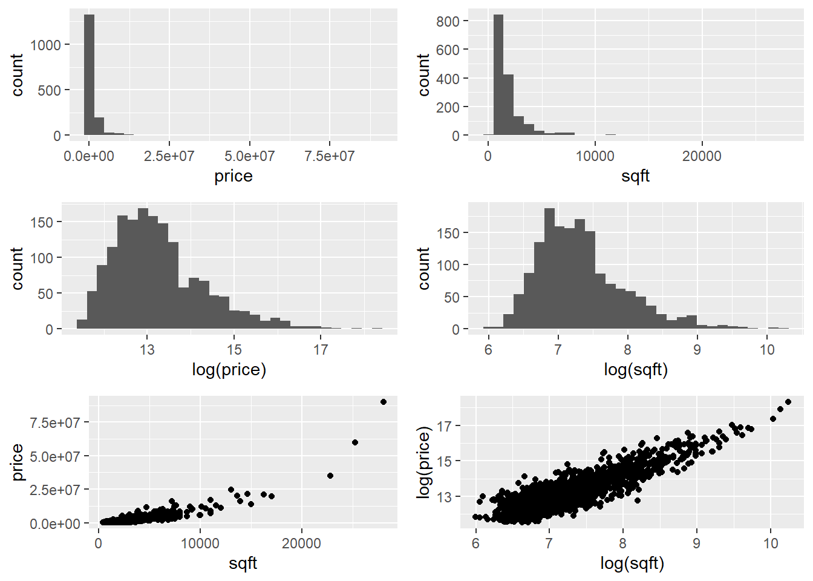

Further Tasks: Model Parameter Selection
Complete the following tasks by using RMarkdown to produce a single document which summarises all your work, i.e. the original questions, your R code, your comments and reflections, etc.
Task Data was collected on the characteristics of homes in the American city of Los Angeles (LA) in 2010 and can be found in the file LAhomes.csv on the Moodle page. The data contain the following variables:
city- the district of LA where the house was locatedtype- eitherSFR(Single Family Residences) orCondo/Twh(Condominium/Town House)bed- the number of bedroomsbath- the number of bathroomsgarage- the number of car spaces in the garagesqft- the floor area of the house (in square feet)pool-Yif the house has a poolspa-TRUEif the house has a spaprice- the most recent sales price ($US)
We are interested in exploring the relationships betwen price and the other variables.
Read the data into an object called LAhomes and answer the following questions.
- By looking at the univariate and bivariate distributions on the
priceandsqftvariables below, what would be a sensible way to proceed if we wanted to model this data? What care must be taken if you were to proceed this way?

- Fit the simple linear model with
log(price)as the response andlog(sqft)as the predictor. Display the fitted model on a scatterplot of the data and construct a bootstrap confidence interval (using the percentiles of the bootstrap distribution) for the slope parameter in the model and interpret its point and interval estimates.
Although you can supply the lm() function with terms like log(price) when you use the infer package to generate bootstrap intervals you the transformed variable needs to already exist. Use the mutate() function in the dplyr package to create new transformed variables.
Repeat the analysis in part b. but with the log of the number of bathrooms (
bath) as the single explanatory variable.Fit the multiple linear regression model using the log transform of all the variables
price(as the response) and bothsqftandbath(as the explanatory variables). Calculate the point and interval estimates of the coefficients of the two predictors separately. Compare their point and interval estimates to those you calculated in parts b. and c. Can you account for the differences?
Remember that we didn't use bootstrapping to construct the confidence intervals for parameters in multiple linear regression models, but rather used the theoretical results based on assumptions. You can access these estimates using the get_regression_table() function in the moderndive package.
- Using the objective measures for model comparisons, which of the models in parts b., c. and d. would you favour? Is this consistent with your conclusions in part d.?
Task You have been asked to determine the pricing of a New York City (NYC) Italian restaurant's dinner menu such that it is competitively positioned with other high-end Italian restaurants by analyzing pricing data that have been collected in order to produce a regression model to predict the price of dinner.
Data from surveys of customers of 168 Italian restaurants in the target area are available. The data can be found in the file restNYC.csv on the Moodle page. Each row represents one customer survey from Italian restaurants in NYC and includes the key variables:
Price- price (in $US) of dinner (including a tip and one drink)Food- customer rating of the food (from 1 to 30)Decor- customer rating fo the decor (from 1 to 30)Service- customer rating of the service (from 1 to 30)East- dummy variable with the value 1 if the restaurant is east of Fifth Avenue, 0 otherwise
- Use the
ggpairsfunction in theGGallypackage (see the following code) to generate an informative set of graphical and numerical summaries which illuminate the relationships between pairs of variables. Where do you see the strongest evidence of relationships betweenpriceand the potential explanatory variables? Is there evidence of multicollineatity in the data?
library(GGally) #Package to produce matrix of 'pairs' plots and more!
restNYC$East <- as.factor(restNYC$East) # East needs to be a factor
# Including the `East` factor
ggpairs(restNYC[,4:8], aes(colour = East, alpha = 0.4))
# Without the `East` factor
ggpairs(restNYC[,4:7], aes(alpha = 0.4)) Fit the simple linear model with
Priceas the response andServiceas the predictor and display the fitted model on a scatterplot of the data. Construct a bootstrap confidence interval (using the standard error from the bootstrap distribution) for the slope parameter in the model.Now fit a multiple regressing model of
PriceonService,Food, andDecor. What happens to the significance ofServicewhen additional variables were added to the model?What is the correct interpretation of the coefficient on
Servicein the linear model which regressesPriceonService,Food, andDecor?